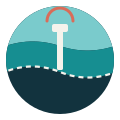
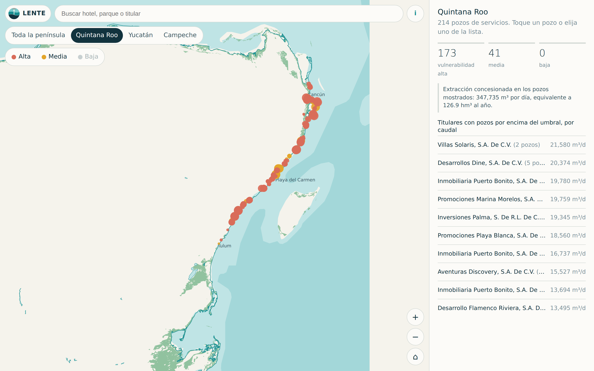
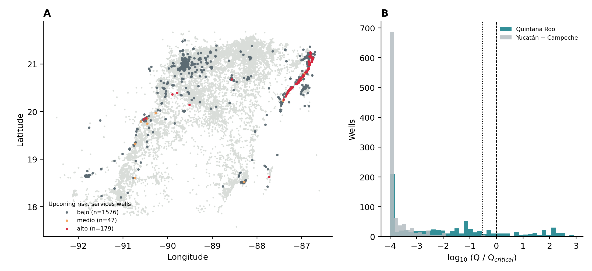
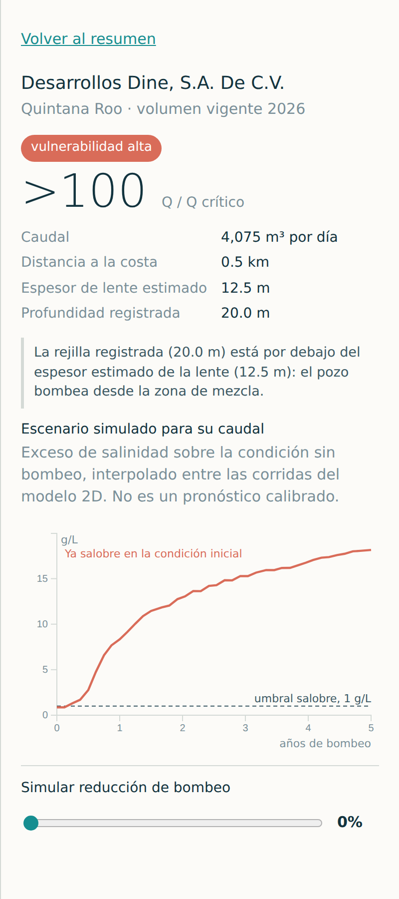
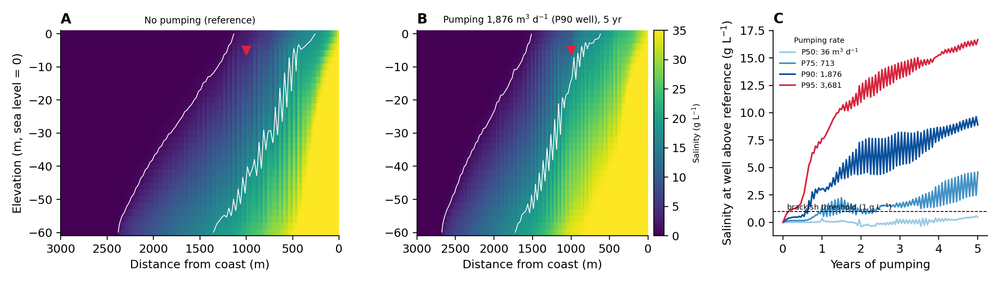
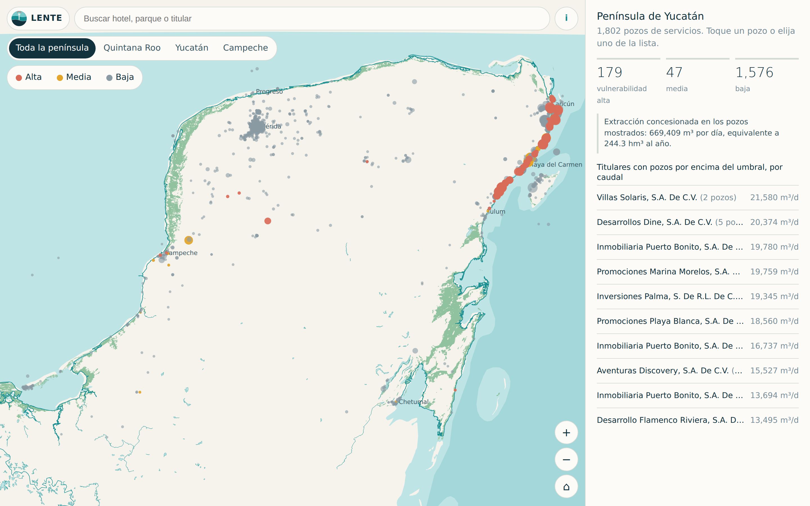

Cada hotel de la costa de Quintana Roo bombea de una delgada capa de agua dulce que flota sobre el mar. LENTE identifica qué pozos están más cerca de volverse salobres, mide los que importan y proyecta cuánto tiempo les queda con el bombeo actual.

La plataforma kárstica de la península de Yucatán casi no tiene corrientes superficiales permanentes: el escurrimiento medio anual es menor a 10 mm. El agua que se bebe, se riega o llena una alberca sale del mismo acuífero de roca caliza, y en la costa esa agua dulce es una capa de pocas decenas de metros que flota sobre el mar.
Esa capa se llama lente de agua dulce. Bajo ella hay agua de mar, y entre ambas una frontera, la haloclina. Cuando un pozo bombea, la haloclina se levanta hacia su rejilla como un cono; si la alcanza, el agua sale salobre. Entonces el hotel paga plantas de ósmosis inversa, pipas de agua, o perfora un pozo nuevo. Nadie le avisa antes.
El volumen en juego está en el padrón oficial. Según el Registro Público de Derechos de Agua (REPDA) con corte al 30 de septiembre de 2026, el uso servicios (hoteles, parques, aeropuerto, plazas comerciales) tiene en Quintana Roo 794 pozos y 333.7 hm³ al año, 2.7 veces más que el abasto público urbano de todo el estado. Los pozos hoteleros son someros: la profundidad mediana registrada es de 5 m, justo donde el ascenso de la haloclina llega primero. Y el mismo hotel inyecta su agua residual tratada por debajo de la lente: 837 permisos de descarga del sector, con 919 mil m³ diarios autorizados.
Frente a esa extracción, la vigilancia pública es mínima: 68 pozos de observación de nivel y 11 sitios de calidad del agua en todo el estado, ninguno con medición continua de salinidad. El diagnóstico de CONAGUA 2012-2023 ya registra salinización en sitios de Tulum y Celestún.
| Uso en Quintana Roo (REPDA 2026) | Pozos | hm³ / año |
|---|---|---|
| Servicios | 794 | 333.7 |
| Agrícola | 2,241 | 248.0 |
| Público urbano | 259 | 122.4 |
| Diferentes usos | 344 | 46.6 |
| Industrial | 162 | 6.2 |
Con las coordenadas del REPDA ubicamos 1,802 pozos de servicios en la península y aplicamos a cada uno un criterio físico: el caudal máximo que puede bombear sin que la haloclina ascienda de forma inestable, dado su distancia al mar y su profundidad registrada. El resultado es una clasificación de vulnerabilidad, no una medición de salinidad: 179 pozos superan ese caudal crítico calculado, 173 de ellos en Quintana Roo y casi todos entre Cancún y Tulum, donde están el Aeropuerto de Cancún, Mayakoba, Xcaret, la zona hotelera de Cancún y las principales cadenas de la Riviera Maya. Ninguno de ellos cuenta hoy con medición continua que confirme o descarte la salinización.

El problema afecta a la principal industria del estado: más de 20 millones de turistas y 18 mil millones de dólares de derrama en 2025. Un pozo perdido en temporada alta no es un problema de ingeniería; es un problema de negocio.
LENTE es un sistema de alerta temprana por pozo: cuántos metros de agua dulce quedan bajo la rejilla, en cuántos meses se cruzaría el umbral salobre con el bombeo actual y cuánto habría que reducirlo para evitarlo. Se entrega en una web app y, con sensores en campo, en alertas al responsable del pozo. Tiene tres componentes en distinto grado de madurez.
| Pozo tipo | m³ / día | Cruza 1 g/L | Cruza 5 g/L |
|---|---|---|---|
| P50, mediano | 36 | No en 5 años | No |
| P75, hotel típico | 713 | 12 meses | No |
| P90, hotel grande | 1,876 | 7 meses | 18 meses |
| P95, aeropuerto o resort | 3,681 | 2 meses | 8 meses |
Simulación, no observación: pozo a 1 km de la costa, rejilla a 5 m, salinidad como exceso sobre la condición sin bombeo.
El hotel abre el mapa, encuentra su pozo, ve su categoría y la curva del escenario que le corresponde, y mueve el simulador de reducción de bombeo para ver cuánto baja su vulnerabilidad; con sensor instalado, recibe la alerta antes de cruzar el umbral.
El desarrollador que compra un predio recibe un reporte de capacidad hídrica antes de perforar; el gobierno estatal, el mapa de la lente como bien público.


Un estudio hidrogeológico privado responde una vez, para un pozo, por 15 a 20 mil dólares. Las herramientas públicas (padrón del REPDA, balance del acuífero, red piezométrica) describen la región pero no proyectan ningún pozo. Las plataformas internacionales de riesgo climático para bienes raíces cubren inundación, huracán y calor; ninguna cubre agua subterránea.
La ventaja defendible no es el modelo, que es de código abierto, sino el historial de calibración: cada temporada de sensores en pozos reales mejora el pronóstico, y un competidor nuevo empieza de cero.
En Quintana Roo, 142 titulares de servicios aparecen en el REPDA 2011 con ubicación y en el de 2026 con volumen vigente; concentran 215.5 hm³ al año y 456 pozos de más de 100 mil m³ anuales. Son prospectos identificados con nombre, no clientes comprometidos; la disposición de pago se valida con los tres pilotos.
| Producto | Cliente | Precio |
|---|---|---|
| Suscripción de pronóstico por pozo | Hoteles y parques | 250 USD / mes |
| Reporte de capacidad hídrica de un predio | Desarrolladores | 3,000 USD |
| Huella hídrica subterránea para reporte de sostenibilidad | Cadenas y fondos | 5,000 USD / año |
Los precios son hipótesis comerciales que se prueban con los pilotos. Con ellas, treinta pozos suscritos cubren el costo base de operación (sensor y mantenimiento incluidos, unos 40 USD por pozo al mes), el mercado accionable en Quintana Roo ronda 1.4 millones de dólares anuales en suscripción, y el mismo producto aplica a cualquier costa kárstica turística del Caribe y el Mediterráneo.
| Indicador | Línea base (oct. 2026) | Meta a 12 meses |
|---|---|---|
| Pozos con sensor y modelo calibrado | 0 | 3 con el premio; 10 con convenios y aportaciones en especie |
| Error de la profundidad de haloclina del modelo frente al perfil medido | Sin medir | < 3 m en los 3 pilotos |
| Anticipación de la alerta antes de cruzar 1 g/L | 0 | 90 días o más |
| Clasificación del Atlas verificada con medición | 0 de 179 | 3 pozos verificados; categoría ajustada si la medición lo contradice |
| Reducción de bombeo acordada con el operador tras la alerta | 0 | 15% del caudal en 3 pilotos de ~1,000 m³/d: 0.16 hm³/año, medido con caudalímetro |
| Mujeres en el equipo técnico y de campo | 1 de 2 | Paridad en contrataciones |
El equipo fundador es paritario. Campo, instalación de sensores y análisis de datos se contratarán con paridad y los indicadores de empleo y capacitación se reportarán por sexo. Los talleres de lectura del mapa con comunidades costeras incluirán a las mujeres que administran pozos domésticos y de pequeño comercio, quienes primero detectan el agua salobre en casa.
| Riesgo | Respuesta |
|---|---|
| El hotel no paga por algo parecido a lo que el gobierno da gratis | La venta se apoya en el costo evitado de un pozo perdido y en la obligación de monitoreo de su permiso de descarga, no en el pronóstico en sí. |
| Pocos datos de salinidad en la costa para calibrar | El sensor del cliente es la fuente de datos. El modelo nace regional y se afina con cada pozo. |
| Un pronóstico falla y el cliente reclama | Los contratos entregan intervalos de confianza y no garantizan resultado; cada alerta lleva su incertidumbre. |
Limitaciones: el modelo usa parámetros de literatura, sin calibración ni análisis de sensibilidad; las coordenadas y profundidades del REPDA tienen errores conocidos. Por eso el Atlas es una clasificación de vulnerabilidad y el Forecast viene después de medir.
En los próximos tres meses el equipo incorporará a una persona con experiencia comercial en el sector hotelero de la Riviera Maya para cerrar los pilotos. Web app: danpc11.github.io/LENTE. Repositorio con datos, scripts, modelo y app (uso restringido): github.com/Danpc11/LENTE.

| Concepto | MXN |
|---|---|
| Sensores de conductividad, nivel y caudal para 3 pozos | 65,000 |
| Instalación y campañas de campo | 25,000 |
| Perfiles de salinidad y análisis de laboratorio | 18,000 |
| Cómputo y servidor de la web app | 12,000 |
| Apoyo técnico para análisis de datos | 20,000 |
| Contingencia y consumibles | 10,000 |
Tres pilotos con el premio; los otros siete de la meta anual, con convenios con operadores (sensor a cambio de datos).
CONAGUA: REPDA (consulta en línea 2026 y servicio REST 2011), red piezométrica 2025, disponibilidad del acuífero Península de Yucatán (DOF 2023), diagnóstico de calidad del agua 2012-2023. CONABIO: línea de costa 2024, manglares 2025, cuerpos de agua 1:50,000. Sedetur Quintana Roo, cifras 2025. Bauer-Gottwein et al., Hydrogeology Journal, 2011. Beddows et al., Journal of Hydrology, 2007.